Designing Formula Student CFRP Wheel Rims by Simulation, Not by Breaking Parts: Inside an 11-Iteration FEA Layup Method
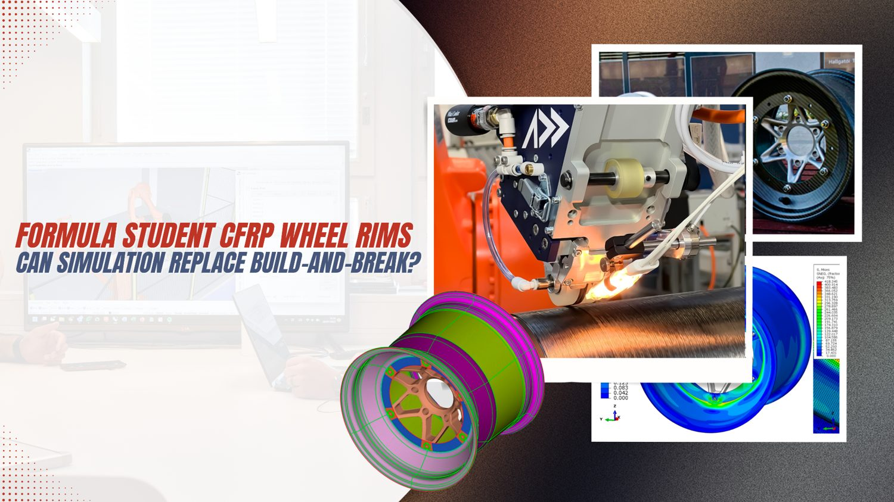
A carbon-fiber wheel rim is one of the meaner structural problems in motorsport composites. It spins, it carries the entire vehicle's vertical load through a tiny contact patch, it transmits drive and braking torque, it sits next to a brake disc that can glow past 400 °C, and it has to survive cornering loads that change direction several times a second. Get the laminate wrong and the failure mode is not a cracked bracket — it is a wheel coming apart at speed.
For most university and club racing teams, the way that laminate gets "validated" is depressingly analog: lay up a candidate stack, build the part, load it until it breaks, look at the pieces, guess at a change, and repeat. It is slow, it is expensive, and the part you eventually race is rarely the lightest one you could have built — it is just the first one that didn't fail.
A team from the Department of Vehicle Development at Széchenyi István University in Győr, Hungary — Dániel Bársony, Martin Kaszab, and Dániel Feszty — published a paper in October 2025 that tackles this head-on. Working with the university's Arrabona Racing Team (ART), they laid out a full simulation-driven design loop for a 10-inch Formula Student rim and, importantly, documented the decision logic most papers leave out. The result reached a finished, requirement-satisfying laminate in 11 manual iterations rather than the 35–60 typically reported for algorithm-based optimization.
This post walks through what the authors did, recreates their key data as ASCII visualizations, and — clearly separated as our own commentary — looks at where automated fiber placement fits a workflow like this. Full citation and license are at the end.
A note on sourcing. Everything attributed to "the paper," "the authors," or "the study" comes from Bársony, Kaszab & Feszty (2025), cited in full at the end. Sections labelled "Our perspective" are Addcomposites' own editorial commentary and are not claims made by, or endorsed by, the paper's authors.
Why the design process is the real subject
The authors open by surveying the published state of the art in CFRP race-wheel design, and their critique is pointed: most prior work either uses manual iteration without ever explaining how the layup was changed between cycles, or uses optimization algorithms that report impressive iteration counts but skip the practical realities of manufacturing — sometimes producing fiber angles that no real layup could reproduce. The paper argues that the missing ingredient across the literature is a transparent, repeatable account of the iteration logic itself: which result triggers which change to the stack.
That is the gap the study sets out to fill. What the authors present as their main contribution is a spelled-out rulebook for changing the stack between cycles — the specific conditions under which a twill ply is added, a twill ply removed, or a UD ply introduced — shown working from start to finish on an actual component.
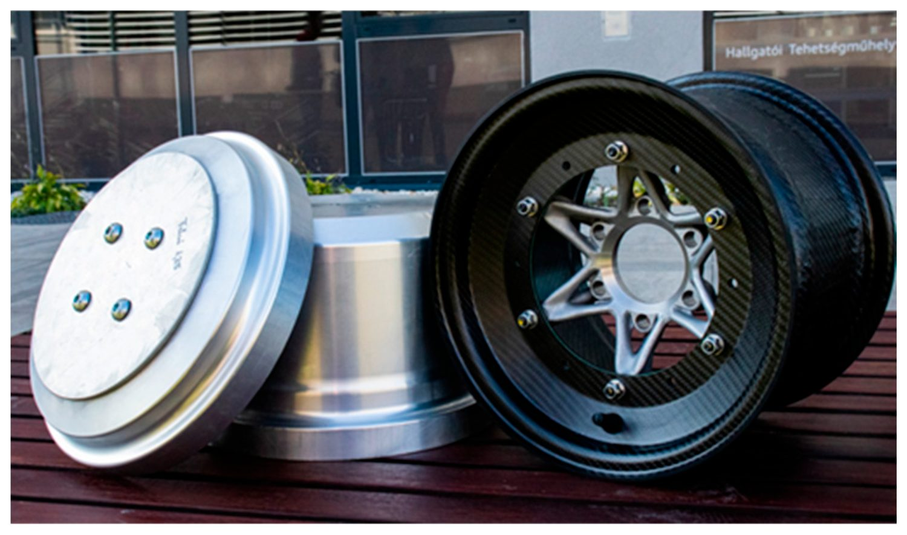
A silver aluminum disc-shaped laminating tool sits beside a finished three-piece CFRP rim with a star-spoked metal 3D-printed center and a glossy woven-carbon barrel. Figure 1 from Bársony, Kaszab & Feszty (2025), Applied Sciences 2025, 15, 11434. https://doi.org/10.3390/app152111434 — © 2025 by the authors, CC BY 4.0.
Our perspective
This framing matters to anyone running a composites program on a budget. The expensive part of composite development is rarely the material; it is the number of build-and-break cycles you burn before converging. A documented decision rule turns iteration from guesswork into something a new team member can pick up and run.
The methodology loop
The study structures the work as a cyclic, four-phase process. We recreated the logic from the paper's Figure 2 below as an ASCII flowchart.
┌────────────────┐
│ REQUIREMENTS │
└────────┬─────────┘
│
┌────────────┴────────────┐
▼ ▼
┌───────────────┐ ┌──────────────────┐
│ Geometry │ │ Load calculations│
│ design │ │ (lap-time sim) │
└───────┬───────┘ └────────┬─────────┘
└────────────┴─────────────┘
▼
┌─────────────────┐ ◄────────────────────────┐
│ FEM ANALYSIS │ │
└────────┬─────────┘ │
▼ │
evaluate: failure criterion / │
stress distribution / displacement │
▼ │
╔═════════════════╗ │
║ All 3 satisfied? ║ │
╚══════╡══════╡════╝ │
YES│ │NO → which requirement failed? │
▼ └───────────────┐ │
┌──────────────┐ ▼ │
│ MANUFACTURING │ ┌───────────┴───────────┐ │
└──────────────┘ ▼ ▼ ▼ │
High disp/ High safety Stress OK│
stress/fail factor but high │
│ │ disp. │
▼ ▼ ▼ │
Add twill Remove twill Add UD ─────┘
layer layer layer
Caption: Addcomposites visualization of the iterative methodology described in Bársony, Kaszab & Feszty (2025), Figure 2. Recreated from the paper's data; not a reproduction of the original figure.
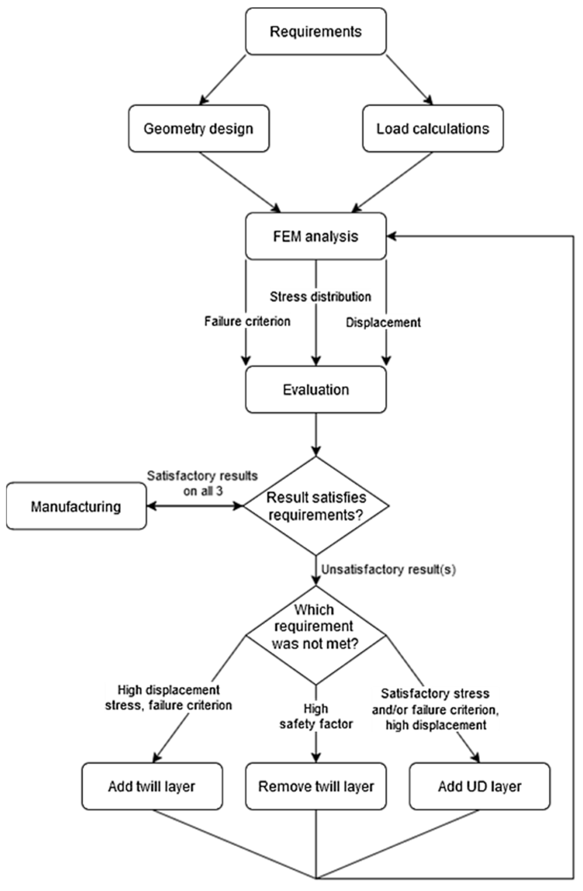
A flowchart of the iterative design loop: it runs from Requirements through geometry and load calculations into FEM analysis, then branches on which criterion failed — adding a twill layer, removing a twill layer, or adding a UD layer — and loops back until all three pass. Figure 2 from: Bársony, D.; Kaszab, M.; Feszty, D. "An Iterative Method for the Design of Carbon-Fiber Reinforced Polymer Wheel Rims." Applied Sciences 2025, 15, 11434. https://doi.org/10.3390/app152111434 — © 2025 by the authors. Licensed under CC BY 4.0.
The loop is simple to state, and that is the point. The first phase assembles the virtual prototype — the geometry, a first-guess stack, and the load set. The second runs the model and grades it on three fronts at once: the Tsai–Wu failure margin, how the stress spreads through the part, and whether peak deflection stays under the cap. The third phase fires only when something falls short, routing to one of three distinct moves depending on which of the three came up wanting. Round and round until they all pass together.
The three modification rules, as described in the study, work like this. If displacement, stress, and the failure factor are all too high, the laminate is too weak and a woven (twill) layer goes in. If the safety factor has overshot — the part is stronger, and therefore heavier, than it needs to be — a twill layer comes out. And if strength is already adequate but the part still flexes too much, a unidirectional layer is added in the stiffness-critical direction. (Our gloss on why that last rule works: UD fiber buys directional stiffness far more cheaply, by weight, than a balanced weave does.)
Loads that come from the car, not from a handbook
One of the study's clearest departures from prior work is where the load cases come from. Rather than hand-calculating forces or borrowing values from road-vehicle standards, the team derived them from multibody lap-time simulation in IPG CarMaker, building a vehicle model that mirrored the real car's suspension geometry, mass distribution, and drivetrain.
They ran three driving scenarios to bracket the loading: a full-throttle-then-full-braking run on high-grip tarmac for peak longitudinal force, a 30-metre-diameter skidpad for peak lateral force, and a lap of the Formula Student Germany autocross course for the combined longitudinal-and-lateral case. The forces at the contact patch, and the safety factors the team assigned, came out as follows.
CONTACT-PATCH FORCES (ART_11) separate simultaneous safety
[N] [N] factor
Longitudinal Fx ─────────────── ±2400 +1050 2.3
Lateral Fy ─────────────── ±2300 +1800 1.25
Vertical Fz ─────────────── +2650 +1600 1.65
Drivetrain torque (with gear ratios + margin) ......... ~1000 Nm
Mounting tire pressure on rim surface ................. 4 bar
Thermal: brake disc >400 °C, but inner wheel face <50 °C
→ heat load judged unnecessary to simulate
Caption: Addcomposites visualization of load data from Bársony, Kaszab & Feszty (2025), Table 2 and Section 5.
The torque figure is worth a comment. With no measured engine value to work from, the team plugged in 1000 Nm — a deliberately high stand-in that already bakes in the drivetrain's gear multiplication plus a margin. The reasoning was forward-looking: a future turbo or hub-motor drivetrain could feed the wheel considerably more torque than today's combustion engine, and they wanted the rim to survive that. The tire itself wasn't modeled; instead they loaded the rim face with 4 bar, the peak pressure seen when a tire is forced over the bead during mounting.
The thermal decision is a nice example of not over-modeling. Indicators fitted to earlier cars never logged more than 50 °C at the wheel's inner face — the neighbouring brake disc might be glowing past 400 °C, but that heat simply doesn't reach the laminate — so thermal loading was kept out of the structural runs entirely.
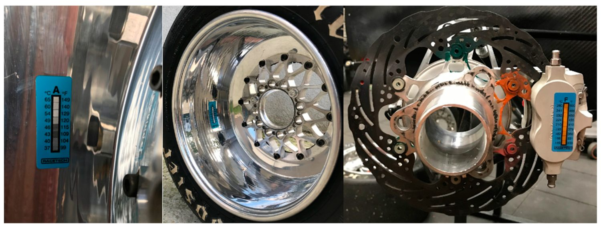
Adhesive temperature-indicator strips are fixed to the rim surface and to the front brake assembly, shown alongside the brake disc, caliper, and hub used to log peak temperatures. Figure 3 from: Bársony, D.; Kaszab, M.; Feszty, D. "An Iterative Method for the Design of Carbon-Fiber Reinforced Polymer Wheel Rims." Applied Sciences 2025, 15, 11434. https://doi.org/10.3390/app152111434 — © 2025 by the authors. Licensed under CC BY 4.0.
Validating the virtual car
Crucially, the loads were not taken on faith. The team re-ran an earlier car (codenamed ART_09) through the same simulation and checked the peak accelerations against telemetry logged on the real car at the 2022 FSG event.
IPG sim [G] FSG telemetry [G] diff Peak longitudinal accel −1.91 −1.89 +1.59 % Peak lateral accel 2.06 2.11 −2.84 %
Caption: Addcomposites visualization of validation data from Bársony, Kaszab & Feszty (2025), Table 3.
Under 3% disagreement on both axes is a strong result. The authors put the small residual down to the simulated lap letting the driving line clip apexes that a virtual track has no cones to police, where the real FSG course does.
Our perspective
This validation step is the quiet hero of the whole paper. A layup optimized against fictional loads is just confidently wrong. Tying the load cases back to measured telemetry is what makes the downstream iteration trustworthy — and it is exactly the discipline we'd want to see before any laminate goes into production.
Material cards from the actual prepreg
The next departure: the team measured their own materials. A datasheet, the authors note, only tells you so much — the real numbers for a woven or unidirectional carbon depend on which weave and resin you use, how much fiber sits in the matrix, and how the laminate is processed. So they cut coupons from the exact fabrics destined for the wheel — a 2×2 twill prepreg and a UD prepreg — and tested them under ASTM D 3039 (tension) and ASTM D 3518M (in-plane shear), pulling at 2 mm/min in a 20 °C room.
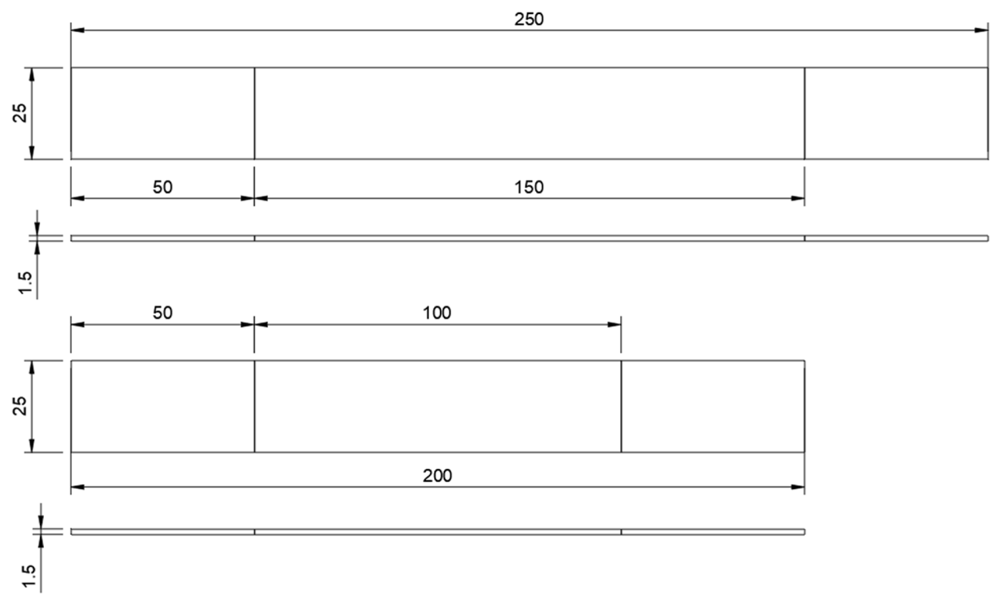
Dimensioned drawings of the two tensile coupon geometries — the unidirectional specimen (above) and the twill specimen (below) — with gauge lengths and a 1.5 mm thickness called out in millimetres. Figure 5 from: Bársony, D.; Kaszab, M.; Feszty, D. "An Iterative Method for the Design of Carbon-Fiber Reinforced Polymer Wheel Rims." Applied Sciences 2025, 15, 11434. https://doi.org/10.3390/app152111434 — © 2025 by the authors. Licensed under CC BY 4.0.
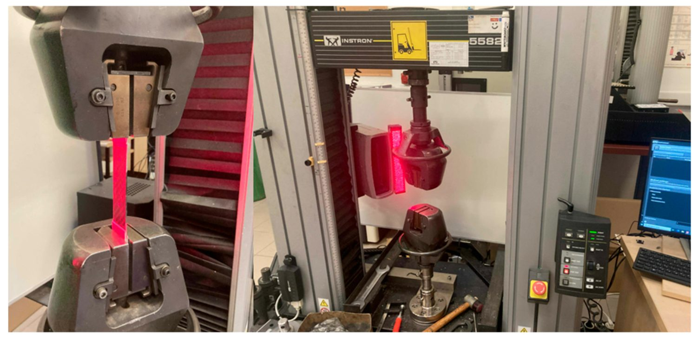
A red-framed universal tensile testing machine grips a flat carbon coupon between its jaws, with the testing software screen visible alongside; tests ran at 2 mm/min and 20 °C. Figure 6 from: Bársony, D.; Kaszab, M.; Feszty, D. "An Iterative Method for the Design of Carbon-Fiber Reinforced Polymer Wheel Rims." Applied Sciences 2025, 15, 11434. https://doi.org/10.3390/app152111434 — © 2025 by the authors. Licensed under CC BY 4.0.
Twill was pulled along its main axis, UD both along and across the fibers, and a rotated coupon gave the in-plane shear. Compression was the one property that never made it onto the test bench — budget ruled it out — so those figures were borrowed from datasheets and comparable laminates instead. Everything was then folded into a pair of orthotropic material cards covering stiffness, shear, Poisson's ratio, the strength limits, and density for each fabric.
The headline contrast between the two materials is what drives the whole layup strategy:
TWILL (2×2 woven) UD (unidirectional)
────────────────── ──────────────────────
E1 ≈ balanced, both axes very high along fibers
E2 ≈ same as E1 (woven low across fibers
is quasi-balanced) (highly directional)
Use → general coverage, targeted stiffness in
handles multi-direction one chosen direction
load, easy to drape at minimum added weight
Caption: Addcomposites visualization of the qualitative material behavior characterized in Bársony, Kaszab & Feszty (2025), Tables 4–5 and Section 7. Numerical values are reported in the original paper.
Our reading is that this difference is the engine of the whole iteration logic. Twill is the workhorse: balanced in two directions, forgiving to drape over curvature, useful wherever load arrives from several directions at once. UD is the scalpel — huge stiffness along the fiber, very little across it — so it earns its place only where one specific direction needs to stop deflecting. Seen that way, the "add a UD layer when strength is fine but it still flexes" rule is a direct consequence of the material data the paper reports.
Geometry and the FEM model
To save time and tooling cost, a single rim profile serves both axles. Most of it carries over from the old wheel; the one substantial change is a wider barrel — 7.25″ out to 8″ — which the suspension group asked for to spread the tire's footprint. Although a race rim needn't obey road-car rules, the team still leaned on ETRTO street-rim guidelines as a sound reference for sizing the bead seat and keeping a tire seated safely. A clearance check in Autodesk Inventor left a 3 mm-plus gap to the nearest suspension hardware — enough headroom over the 2.7 mm of rim-edge flex the analysis predicted.
For the FEM work, the CAD went into ANSA for cleanup and meshing. Only a 60° wedge of the rim was modeled — a one-sixth rotational slice — meshed at its mid-surface with first-order shells. A short convergence study across 4, 2 and 1 mm elements landed on a 1 mm mesh throughout, tightened further around the center. The center itself, being less critical, was left coarser at 2 mm tets to hold down the element count. Abaqus ran the solves. The wheel loads entered through a single reference node at the patch centroid, coupled out to the rim; drive torque was fed in through the center the same way; and Abaqus's pressure load acted on the rim's inner walls.
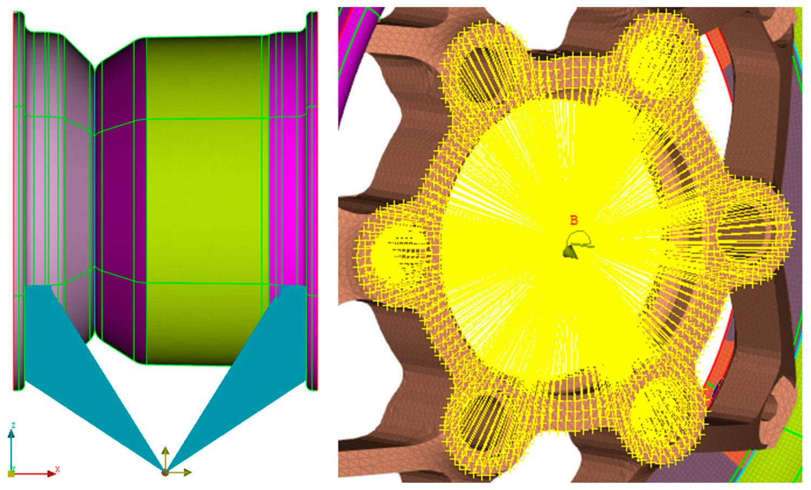
Two FEM views of the load setup: the left shows contact-patch forces fed through a single coupled reference node out to the rim, and the right shows yellow coupling lines radiating to the wheel-center point B where drive torque is applied. Figure 8 from: Bársony, D.; Kaszab, M.; Feszty, D. "An Iterative Method for the Design of Carbon-Fiber Reinforced Polymer Wheel Rims." Applied Sciences 2025, 15, 11434. https://doi.org/10.3390/app152111434 — © 2025 by the authors. Licensed under CC BY 4.0.
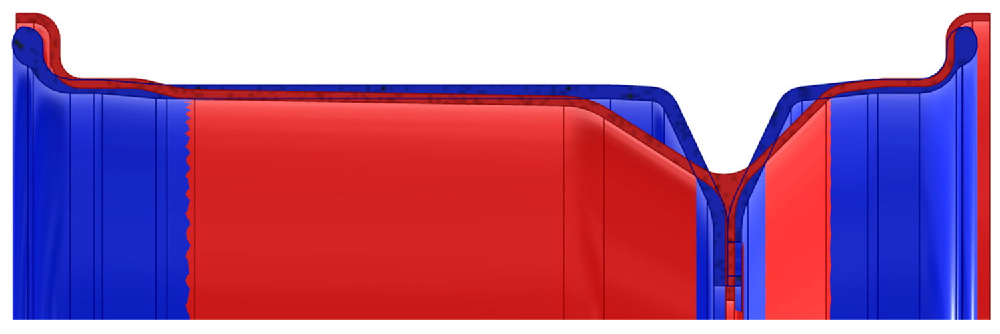
An overlaid cross-section of the two rim profiles — the commercial aluminum rim in blue and the custom CFRP rim in red — showing the wider barrel and revised bead-seat geometry of the new design. Figure 4 from: Bársony, D.; Kaszab, M.; Feszty, D. "An Iterative Method for the Design of Carbon-Fiber Reinforced Polymer Wheel Rims." Applied Sciences 2025, 15, 11434. https://doi.org/10.3390/app152111434 — © 2025 by the authors. Licensed under CC BY 4.0.
The 11 iterations, visualized
Here is where the documented logic earns its keep. The starting laminate was deliberately plain and symmetric: twenty twill plies alternating 0°/45°, ten of each. They picked it for two practical reasons — plies are trivial to add or pull from a stack like that, and starting deliberately under-built means the first cycles can only improve. The finish line was set at 3.00 mm of global displacement and a Tsai–Wu index of 0.833 — which is simply 1 ÷ 1.2, the inverse of the required safety factor.
Tracking the two governing metrics across all eleven cycles tells the story. We recreated the trends from the paper's Figures 9 and 10:
GLOBAL DISPLACEMENT [mm] target ≤ 3.00 ····················
4.0 │ ●──●
3.5 │ ╭ ╰
3.0 │················╭······╰●──●──●──● ← settles at 2.763 mm
2.5 │ ╭
2.0 │ ╭
1.5 │ ╭
1.0 │ ●──●─╭
0.5 │●──●╰
└──┬──┬──┬──┬──┬──┬──┬──┬──┬──┬──┬──
1 2 3 4 5 6 7 8 9 10 11 ITERATION
TSAI–WU FAILURE INDEX [-] target ≤ 0.833 ··················
0.9 │ ●──●──●──●
0.8 │···············╭···········●──● ← settles ~0.72
0.7 │ ╭
0.6 │ ●╭
0.5 │ ╭
0.4 │ ●──●──╰
0.3 │●─╰
└──┬──┬──┬──┬──┬──┬──┬──┬──┬──┬──┬──
1 2 3 4 5 6 7 8 9 10 11 ITERATION
Caption: Addcomposites visualization of iteration trends from Bársony, Kaszab & Feszty (2025), Figures 9 and 10. Values read approximately from the published charts.
The sharp step between cycles 5 and 6 is the turning point of the whole run. According to the authors, it was triggered by shuffling the stacking order in several zones simultaneously — a change big enough to swing both displacement and the failure index hard, dropping the design close to target in a single move. Cycles 7 through 11 are then housekeeping: shaving off the overshoot and moving material around until both curves sit below their limits at the same time.
To make those zone-by-zone changes tractable, the rim was divided into six layup zones, each able to carry a different stack:
RIM CROSS-SECTION (six independent layup zones)
outer ┌───────────────────────────────────────────┐
bead → │ Rim outer │
│ ┌───────────────────────────────────┐ │
│ │ Rim inner1 │ inner2 │ inner3 │ │ ← barrel
│ └───────────────────────────────────┘ │
└────────────────┬──────────────┬──────────┘
│ Rim center1 │
│ Rim center2 │ ← spoke / hub
└──────────────┘ interface
Caption: Addcomposites visualization of the six rim layup zones defined in Bársony, Kaszab & Feszty (2025), Tables 6–7.
Each zone evolved on its own track through the iterations — the outer rim, for instance, shed twill plies as the design matured and picked up a single UD ply late in the process, while the deeper barrel zones (inner1–inner3) layered in directional UD plies at angles like ±45° and 90° to fight specific deflection modes. The center zones, carrying the bolted interface to the wheel center, ended up as the thickest, most heavily woven stacks.
The final laminate and the payoff
The converged design is symmetric, mixing twill and UD differently in each zone. Two detailing choices stand out: the plies are sequenced so the bead-seat region gets folded into the heart of the laminate rather than tacked on, and the edges of adjacent zones overlap so fibers run unbroken from one section into the next. As a schematic, the final per-zone stacks look roughly like this:
FINAL PLYBOOK (schematic, outer face → inner) T=twill U=UD Rim outer : T0 T45 T0 T45 [U0] T0 T45 T0 T45 (~9 plies) Rim inner1 : T0 T45 T0 T45 [U90 U0 U90] T45 T0 T45 T0 (~11 plies) Rim inner2 : T0 T45 T0 T45 [U+45 U0 U−45] T45 T0 T45 T0 (~11 plies) Rim inner3 : T0 T45 T0 T45 [U90 U0 U90] T45 T0 T45 T0 (~11 plies) Rim center1 : T0 T45 T0 T45 T0 T45 T0 T45 T0 T45 (~10 plies) Rim center2 : T0 T45 ×11 alternating (~22 plies)
Caption: Addcomposites schematic of the final layup described in Bársony, Kaszab & Feszty (2025), Table 7. Simplified for readability; consult the paper for the exact ply-by-ply book.
On the final laminate the worst Tsai–Wu value was 1.015, but the authors treat that as a numerical edge artifact rather than a real hotspot and set it aside. The meaningful results: 2.763 mm of global displacement (under the 3 mm ceiling) and a worst-case index of 0.796 in the separate torque case. All three criteria clear at the same time — which is the only definition of "finished" this loop recognizes.
The weight result is the headline. The rim by itself lands at roughly 850 g — which the authors put at 35% under the aluminum rim and a further 15% below the team's earlier carbon one. Fold in the center and fasteners and those gaps widen to 41% and 19%. As full assemblies:
WHEEL ASSEMBLY MASS [g] vs. ART_11 3-piece aluminum ████████████████████████ 2200 (+41% heavier) 1-piece magnesium ███████████████████ 1660 (+22%) ART_09 (prev CFRP)██████████████████ 1600 (+19%) ART_11 (new CFRP) ██████████████ 1300 (baseline)
Caption: Addcomposites visualization of mass data from Bársony, Kaszab & Feszty (2025), Table 8.
The authors also make a resource-cost argument against pure algorithmic optimization: their manual, logic-driven route reached a finished laminate in 11 iterations, against the 35–60 commonly reported for algorithm-based methods in the literature — while keeping every intermediate layup manufacturable, with integer fiber angles a real layup process can actually achieve.
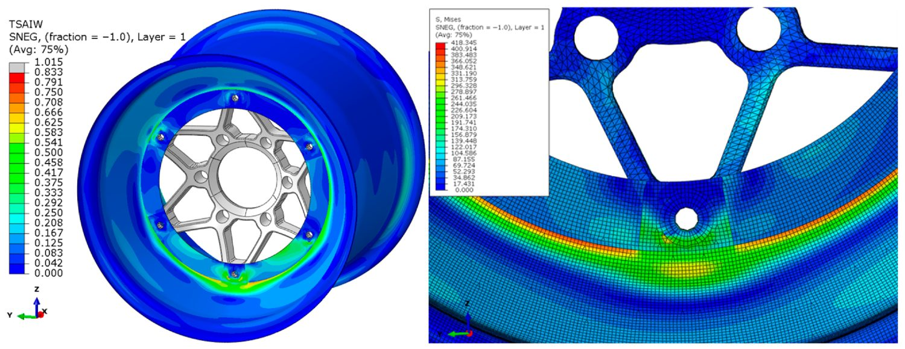
A color contour plot of the Tsai–Wu failure index across the final rim (left) and a Von Mises stress map at the spoke interface (right), with the highest values concentrated near the bead seat and the spoke-to-barrel junction. Figure 17 from: Bársony, D.; Kaszab, M.; Feszty, D. "An Iterative Method for the Design of Carbon-Fiber Reinforced Polymer Wheel Rims." Applied Sciences 2025, 15, 11434. https://doi.org/10.3390/app152111434 — © 2025 by the authors. Licensed under CC BY 4.0.
Where automated fiber placement enters the picture
This section is Addcomposites' own commentary. The paper does not discuss, recommend, or endorse AFP, Addcomposites, or any manufacturing equipment — it concerns the design methodology and does not detail a manufacturing route, though its prepreg materials and the laminating tools pictured in its Figure 1 point to conventional hand layup.
What strikes us, reading the final plybook, is how specific it is. Six zones, each with its own ply count, and several of them calling for unidirectional plies at exact angles — 90°, +45°, −45° — sandwiched between woven layers, with overlaps engineered to preserve fiber continuity across zone boundaries. That is precisely the kind of laminate where the gap between the stack you designed and the stack you can actually build by hand tends to open up.
Manual layup over a rotating rim mandrel struggles to hold a UD ply at a true 90° or ±45° around compound curvature; angles drift, thickness wanders ply-to-ply, and the carefully placed directional reinforcement that the FEA counted on ends up smeared. When the part that comes off the tool no longer matches the model, the eleven iterations of analysis lose some of their meaning.
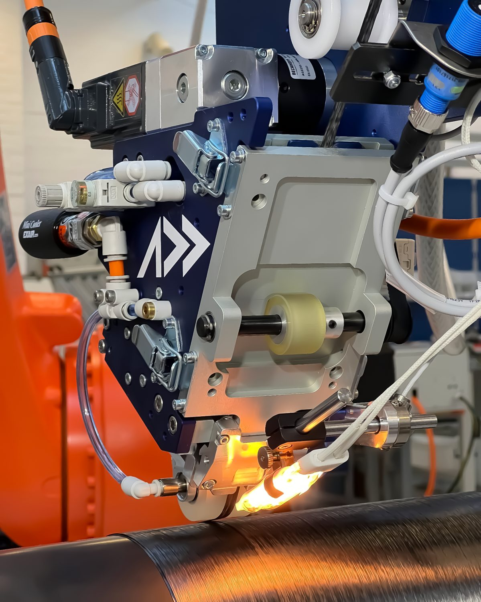
An Addcomposites AFP-XS head lays carbon-fiber tow onto a rotating cylindrical mandrel, the heated nip point glowing as the compaction roller consolidates the tape against the already-wound surface — placing each course at a programmed angle rather than approximating it by hand. Image: Addcomposites.
This is the class of problem automated fiber placement is built for. An AFP system places tape along programmed paths with controlled fiber angle, controlled compaction force, and controlled ply boundaries — so the +45°/0°/−45° UD sequence in "Rim inner2," or the local overlaps that maintain continuity, can be reproduced as designed rather than approximated. Our AFP-XS system was made specifically to put that capability within reach of the kind of teams who'd be designing a part like this: it mounts onto a standard industrial robot rather than requiring a dedicated multi-million-dollar gantry, works across thermoset, thermoplastic, and dry-fiber materials in tape widths from ¼″ to 1″, and is driven by our AddPath software for path planning, simulation, and digital-twin monitoring — including direct control over heat, ply drop-off, and tool tilt.
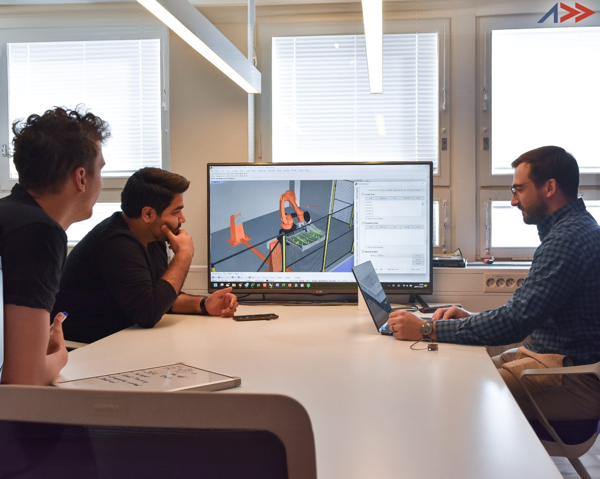
The other half of the workflow: AddPath turns a layup design into programmed toolpaths, so the fiber lands where the analysis intended. Image: Addcomposites.
Our perspective
A documented FEA loop like this one and a programmable layup process are natural complements. The simulation tells you exactly which fiber should go where; AFP is how you make sure it actually ends up there. For a Formula Student or club-motorsport program, that combination is what turns a clever paper into a repeatable, lighter, genuinely optimized part — without the build-and-break tax.
If you're developing rotating or load-introducing composite structures and want to talk through how a programmable layup fits a simulation-first workflow, get in touch with the Addcomposites team →
Get in Touch with Addcomposites
Read the research
This article summarizes and comments on independent academic work. All technical findings belong to the original authors. We encourage you to read the open-access paper in full:
- Bársony, D.; Kaszab, M.; Feszty, D. "An Iterative Method for the Design of Carbon-Fiber Reinforced Polymer Wheel Rims." Applied Sciences 2025, 15, 11434. https://doi.org/10.3390/app152111434 Published 26 October 2025 by MDPI. © 2025 by the authors. Open access under the Creative Commons Attribution (CC BY 4.0) license: https://creativecommons.org/licenses/by/4.0/
The authors have not reviewed or endorsed this article, Addcomposites, or its products.